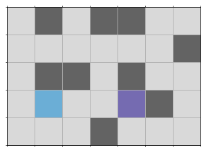

17.2. Schleifen#
Viele Aufgaben, die wir über unser Leben hinweg verrichten sind langweilig, da wir immer und immer wieder die gleichen Basisschritte wiederholen müssen.
Nehmen Sie nur das Nachschlagen einer Telefonnummer im Telefonbuch (falls Sie so etwas überhaupt noch kennen). Wir gehen dabei Seite für Seite durch und suchen nach einem bestimmten Namen - langweilig …
Auch ganz alltägliche Dinge wie der Abwasch, Zähneputzen, Kochen, ja nahezu jede Aktion beinhaltet die eine oder andere Art der Wiederholung.
Wie sich gezeigt hat, können wir interessanterweise durch diese langweiligen Wiederholungen ganz erstaunliche Dinge vollbringen.
Wiederholung
Wiederholung ist die Grundlage aller Berechnung.
17.2.1. Motivation#
Lassen Sie uns einmal auf unseren Roboter blicken. Dieser bewegt sich auf einem Gitter. Jeder Gitterpunkt ist entweder begehbar oder durch ein Hindernis belegt. Der Roboter kann nur nach vorne laufen und sich nach links um 90 Grad drehen. Eine genauere Beschreibung des Roboters und seiner Welt finden Sie in der Übung Roboterwelt.
Die folgende Welt enthält unseren Roboter (türkis), das Ziel (gelb), begehbare Zellen (lila) und unbegehbare Hindernisse (blau).
import roboworld as rw
world = rw.complex_maze(nrows=5, ncols=7)
world.show()

Wir sollen nun einen Algorithmus entwerfen, welcher den Roboter zum Ziel führt (sofern dies möglich ist). Diese Aufgabe scheint überwältigend schwierig!
Wir verwenden das random-Modul um einen fairen Münzwurf zu simulieren.
Zudem verwenden wir lediglich folgende Methoden des Roboters:
turn_left()is_wall_in_front()move()is_at_goal()
In wie vielen Zeilen Code können wir dieses Problem lösen? Durch das Potenzial der Wiederholung brauchen wir ca. 10 Zeilen Code!
Zuerst definieren wir eine Funktion random_move(robo) welche den Roboter um einen zufälligen Nachbargitterpunkt bewegt (falls dies möglich ist).
import random as rnd
def random_move(robo):
turns = rnd.choice([0,1,2,3])
for _ in range(turns):
robo.turn_left()
if not robo.is_wall_in_front():
robo.move()
Dann nutzten wir die Wiederholung und bewegen den Roboter immer weiter auf zufällige Nachbargitterpunkte bis er am Ziel angekommen ist:
robo = world.get_robo()
robo.disable_print()
while not robo.is_at_goal():
random_move(robo)
Lassen Sie uns die sog. Zufallsfahrt des Roboters ansehen:
rw.animate(world)
Ist dieser Algorithmus besonders klever? Nein! Der Algorithmus ist sehr einfach und benötigt unter Umständen sehr viel Rechenzeit. Dennoch zeigt dieses Beispiel, dass die Wiederholung von einfachen Befehlen zu komplexen Lösungen führen können!
Wiederholung und Codekomplexität
Wiederholung trennt den Aufwand zum Lösen einer Aufgabe von der Komplexität des Codes. Eine Berechnung kann enorm aufwendig sein und dennoch benötigen wir wenig Denkarbeit (wenig Code) um einen Algorithmus für die Lösung zu entwerfen!
17.2.2. Die for-Schleife#
Die for-Schleife verwenden wir immer dann, wenn wir (zur Laufzeit) vor dem Eintritt in die Wiederholung wissen, wie viele Wiederholungen wir maximal benötigen.
Dabei wollen wir entweder
für eine bestimmte Anzahl \(n \in \mathbb{N}\), oder
für jedes Element einer Datenstruktur (Liste, Tupel, usw.)
einen Befehlsblock ausführen.
Im zweiten Fall spricht man auch von der sog. Foreach-Schleife.
Durch den Zahlenbereich range() reduziert Python den ersten Fall auf den zweiten.
17.2.2.1. Die klassische for-Schleife (Fall 1)#
n = ...
for i in range(n):
# Codeblock
Der Name der Zählervariable (hier i) kann frei gewählt werden, allerdings verwendet man für Fall 1 gewöhnlich: i, j oder k.
for i in range(10):
print(i**2)
0
1
4
9
16
25
36
49
64
81
Will man andeutet, dass die Zählervariable nicht benötigt wird, so verwendet man den Unterstrich _ als ihren Namen.
for _ in range(10):
print('42 ist die Antwort!')
42 ist die Antwort!
42 ist die Antwort!
42 ist die Antwort!
42 ist die Antwort!
42 ist die Antwort!
42 ist die Antwort!
42 ist die Antwort!
42 ist die Antwort!
42 ist die Antwort!
42 ist die Antwort!
17.2.2.2. Die Foreach-Schleife (Fall 2)#
sequenz = ... # some Sequenz of Elements
for element in sequenz:
# Codeblock
Der Name mit dem wir die Elemente der Sequenz ansprechen (hier element) kann frei gewählt werden und sollte beschreiben über welche Elemente wir iterieren.
names = ['Sarah', 'Sebastian', 'Babar', 'Simon', 'Martin']
for name in names:
print(name)
Sarah
Sebastian
Babar
Simon
Martin
range() ist, genau wie eine Liste und ein Tupel, auch eine Sequenz.
Eine for-Schleife läuft über die Einträge einer Sequenz oder anderer iterierbarer Strukturen.
Es kann durchaus sein, dass wir die for-Schleife auch dann verwenden, wenn nicht genau klar ist wie viele Wiederholungen wir benötigen.
Ist uns bekannt wie viele Wiederholungen wir maximal benötigen ist dies kein Problem.
Nehmen wir den Test ob eine Zahl \(n\) eine Primzahl ist. Ein einfacher Algorithmus für den Test, testet für jede Zahl \(m \in \{2, 3, \ldots, n-1\}\) ob \(m\) die Zahl \(n\) teilt. Wenn dies der Fall ist, ist \(n\) keine Primzahl und wir können die Wiederholung stoppen. Wir wissen demnach, dass wir maximal \(n-m-3\) Wiederholungen benötigen. Es könnten jedoch auch weniger sein:
def is_prime(n):
prime = True
for i in range(2, n):
if n % i == 0:
prime = False
break
return prime
print(is_prime(2))
print(is_prime(13))
print(is_prime(25))
print(is_prime(83))
True
True
False
True
Um die for-Schleife frühzeitig zu beenden verwenden wir break.
Mit break springen wir aus der innersten Schleife heraus.
Wir könnten stattdessen auch return verwenden, um aus der gesamten Funktion herauszuspringen:
def is_prime(n):
for i in range(2, n):
if n % i == 0:
return False
return True
print(is_prime(2))
print(is_prime(13))
print(is_prime(25))
print(is_prime(83))
True
True
False
True
Eine weitere Steuermöglichkeit bietet continue.
Mit continue springen wir nicht aus der Schleife heraus sondern springen zurück zum Schleifenkopf.
Der Code nach continue wird übersprungen:
def double_even_numbers(numbers):
result = []
for number in numbers:
if number % 2 == 1:
continue
print(number)
result.append(number*2)
return result
numbers = list(range(10))
double_even_numbers(numbers)
0
2
4
6
8
[0, 4, 8, 12, 16]
Allerdings braucht man continue so gut wie nie und wenn es verwendet wird handelt es sich oftmals um schlecht leserlichen Code.
def double_even_numbers(numbers):
result = []
for number in numbers:
if number % 2 == 0:
print(number)
result.append(number*2)
return result
numbers = list(range(10))
double_even_numbers(numbers)
0
2
4
6
8
[0, 4, 8, 12, 16]
Kontrollmechanismen der for-Schleife
Gehen Sie sparsam mit break und continue um, oftmals brauchen Sie es nicht!
17.2.2.3. Die while-Schleife#
Die while-Schleife verwenden wir immer dann, wenn wir (zur Laufzeit) nicht wissen wie viele Wiederholungen wir maximal benötigen.
Die Wiederholung endet sobald eine bestimmte Bedingung, d.h. ein logischer Ausdruck P zu False ausgewertet wird.
while P:
# Codeblock1
else: # (optional)
# Codeblock2
Codeblock2 wird einmal ausgeführt sobald P zu False ausgewertet wird und die while-Schleife verlassen wird, d.h. als letzter Schritt.
Endlosschleifen
Wird P niemals False, so endet die Wiederholung niemals und wir haben eine sog. Endlosschleife!
i = 0
while i < 10:
i += 1
print(i)
else:
print('end of the while-loop')
1
2
3
4
5
6
7
8
9
10
end of the while-loop
Mächtigkeit der While-Schleife
Jede for-Schleife lässt sich in eine while-Schleife transformieren!
names = ['Sarah', 'Sebastian', 'Babar', 'Simon', 'Martin']
for name in names:
print(name)
print()
i = 0
while i < len(names):
print(names[i])
i += 1
Sarah
Sebastian
Babar
Simon
Martin
Sarah
Sebastian
Babar
Simon
Martin
while-Schleifen sind mächtiger aber auch gefährlicher bzw. oftmals schwerer zu lesen und zu verstehen als for-Schleifen.
Verwendungskriterium
Verwenden Sie die while-Schleife nur wenn die for-Schleife ungeeignet ist.
break und continue funktionieren für die while-Schleife genauso wie für die for-Schleife.
Verwendungskriterium While-Schleife
Gehen Sie sparsam mit break und continue um, oftmals brauchen Sie es nicht!
Folgender Code zeigt eine unnötige Verwendung von continue.
# bad code!!!
i = 0
while i < 10:
i += 1
if i % 2 == 0:
continue
print(i)
1
3
5
7
9
Stattdessen können wir die if-Bedingung anpassen.
# better!
i = 0
while i < 10:
i += 1
if i % 2 == 1:
print(i)
1
3
5
7
9
Oder aber Sie erhöhen die Zählervariable um zwei anstatt um eins.
# even better!
i = 1
while i < 10:
print(i)
i += 2
1
3
5
7
9
Am einfachsten zu lesen bleibt jedoch die for-Schleife.
# even better!
for i in range(1,10,2):
print(i)
1
3
5
7
9
Verhindern von Endlosschleifen
Prüfen Sie immer ob Ihre Bedingung P durch den Schleifenrumpf garantiert irgendwann False ergibt!
17.2.3. Beispiel (ggT)#
Lassen Sie uns Euklid’s Algorithmus gcd(m,n) zum finden des Größter gemeinsamer Teiler (ggT) zweier ganzer Zahlen von \(m\) und \(n\) erneut implementieren.
Euklid’s Algorithmus geht wie folgt vor:
Berechne den Restwert der Division \(m / n\) (Modulodivision). Sei dieser gleich \(r\).
Setze \(m \leftarrow n\), \(n \leftarrow r\) und gehe zurück zu Schritt 1.
Falls \(r = 0\) (und somit \(n = 0\)), so ist der Algorithmus beendet. Das Ergebnis (ggT) ist \(m\). Ansonsten fahre fort.
def gcd(m, n):
while n != 0:
r = m % n
m = n
n = r
return m
gcd(36, 24)
12
Durch das packing bzw. unpacking (siehe Tupel) können wir den Code noch verkürzen:
def gcd(m, n):
while n != 0:
m, n = n, m % n
return m
gcd(36, 24)
12